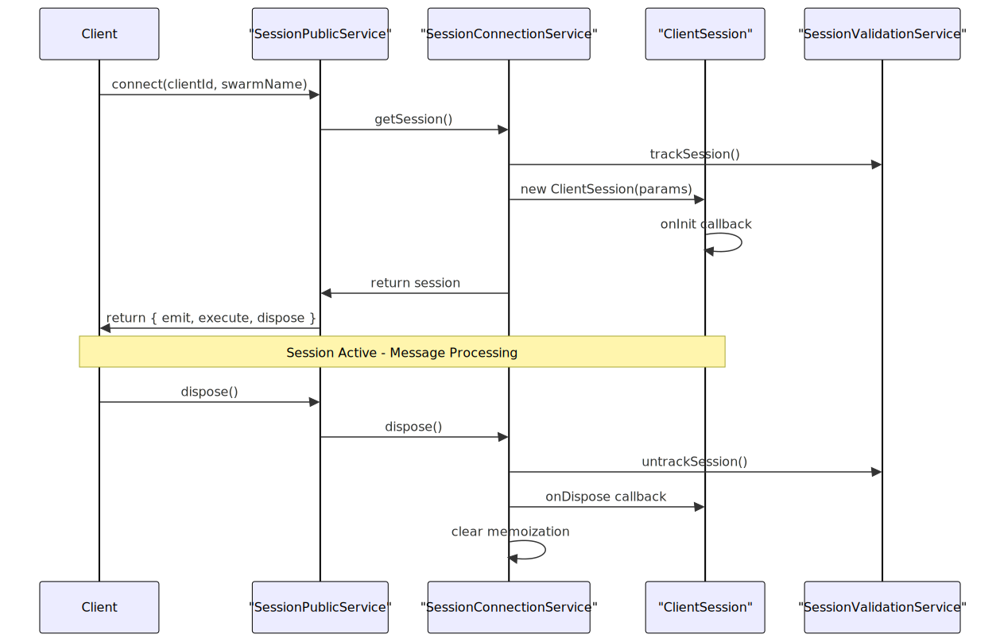

Session management provides the coordination layer between clients and agent swarms, handling message flow, policy enforcement, and resource lifecycle. Sessions serve as isolated execution contexts that orchestrate interactions between individual clients and specific swarms, ensuring proper message routing, validation, and cleanup.
For information about individual agent execution within sessions, see Client Agent. For swarm-level coordination across multiple agents, see Swarm Management.
Sessions implement a three-tier architecture with public APIs, connection services, and client implementations. The SessionPublicService provides the external interface, SessionConnectionService manages instances with memoization, and ClientSession handles the core session logic.
Sessions coordinate with swarms to access agents, policies for message validation, and the event bus for system-wide communication. The memoization strategy ensures efficient resource reuse across multiple calls with the same client-swarm combination.
Sessions follow a managed lifecycle from creation through disposal, with automatic resource tracking and cleanup. The SessionConnectionService uses memoization to cache session instances, while validation services track active sessions for proper resource management.

The lifecycle includes initialization callbacks, active message processing, and disposal with proper cleanup. Session validation services ensure that resources are properly tracked and prevent memory leaks in long-running applications.
Sessions handle bidirectional message flow with policy validation, agent execution, and event emission. The emit method sends messages to clients via swarms, while execute processes incoming messages through agents and returns responses.

All message flows include policy validation checkpoints. When validation fails, sessions automatically substitute ban messages and log policy violations through the event system.
Sessions are configured through ISessionParams which combines schema definitions, runtime dependencies, and callback hooks. The parameter structure integrates swarm references, policy enforcement, logging, and event systems.
| Parameter | Type | Purpose |
|---|---|---|
clientId |
string |
Client identification and session scoping |
swarmName |
SwarmName |
Target swarm for agent coordination |
swarm |
ISwarm |
Swarm instance for agent access |
policy |
IPolicy |
Message validation and enforcement |
logger |
ILogger |
Operation logging and debugging |
bus |
IBus |
Event emission and system communication |
The session schema extends ISwarmSessionCallbacks to provide lifecycle hooks for initialization, emission, execution, and disposal events. These callbacks enable custom behavior injection at key session lifecycle points.
Sessions coordinate agent execution through swarms, managing the handoff between session-level message processing and agent-level tool execution. The execute method delegates to swarm agents while maintaining session context and policy enforcement.

Sessions maintain execution context across agent transitions, ensuring proper client identification and session state preservation during complex multi-agent workflows.
Sessions emit structured events through BusService for system monitoring, debugging, and integration. Events include execution tracking, message flow, and lifecycle state changes with contextual information.
The event structure follows the IBusEvent interface with source identification, input/output data, and session context:
// Example session event emission
await this.params.bus.emit<IBusEvent>(this.params.clientId, {
type: "emit",
source: "session-bus",
input: { message },
output: {},
context: { swarmName: this.params.swarmName },
clientId: this.params.clientId,
});
Event types include "emit", "execute", "connect", and "dispose" with session-specific context for filtering and monitoring. The event system enables external systems to track session activity and implement custom analytics or logging.
Sessions implement comprehensive resource management with automatic cleanup, validation tracking, and memoization clearing. The disposal process ensures proper resource release and prevents memory leaks in long-running applications.

The disposal process includes validation service cleanup, callback execution, and memoization clearing to ensure complete resource release. Sessions automatically handle cleanup of associated agents, histories, and event subscriptions.